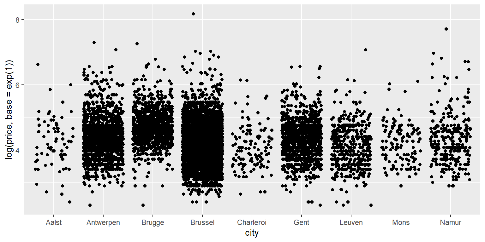
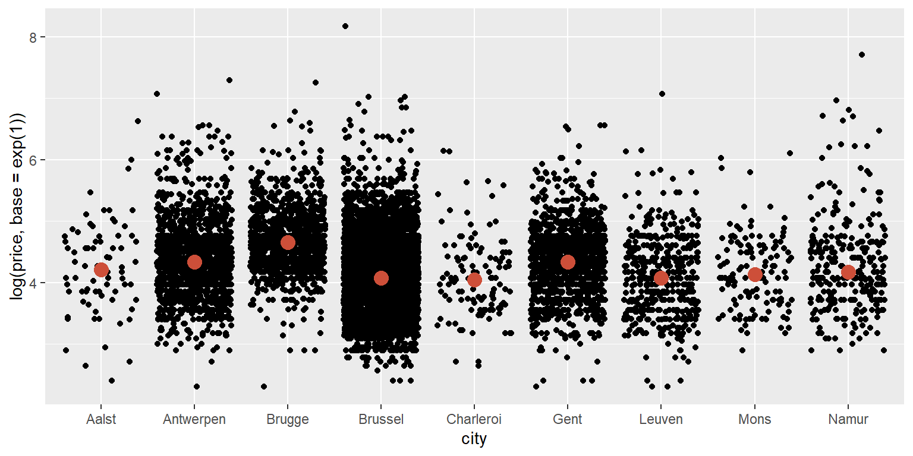
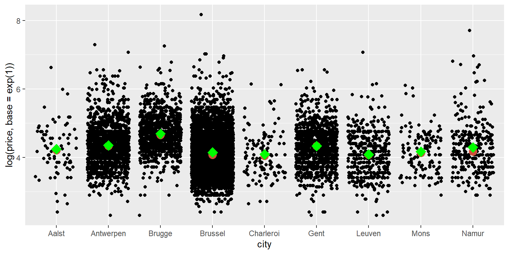

Comparando preços de estadias no Airbnb com o R
por Rodrigo Hermont Ozon
O objetivo de traduzir esse tutorial consiste em facilitar o aprendizado e utilização da linguagem estatística para os profissionais de marketing e demais áreas de negócio que precisam se adequar a uma realidade mutante e movida por um fluxo significativo de informações por todos os lados. Trabalhar e interpretar bem os dados é um desafio computacional para muitos profissionais dessa área; e esta tradução visa cobrir (ainda que superficialmente) tal lacuna. Este e-book foi escrito no overleaf com o pacote knitr para a página interativa de autoria de KU Leven Marketing Department.
Sobre esse tutorial
Neste tutorial, exploraremos o R como uma ferramenta para analisar e visualizar dados. O R é uma linguagem de programação estatística que rapidamente ganhou popularidade em muitos campos científicos. A principal diferença entre o R e outro software estatístico como o SPSS é que o R não possui interface gráfica com o usuário. Não há botões para clicar. R é executado inteiramente digitando comandos em uma interface de texto. Isso pode parecer assustador, mas, esperançosamente, no final deste tutorial, você verá como o R pode ajudá-lo a fazer uma melhor análise estatística.
Então, por que estamos usando R e não um dos muitos outros pacotes estatísticos como SPSS, Eviews, Stata, SAS ou Microsoft Excel? Algumas das razões mais importantes:
Ao contrário de outros softwares, o R é gratuito e de código aberto, e sempre será! R é uma linguagem de programação e não uma interface gráfica como o SPSS. Ele realiza análises ou visualizações executando algumas linhas de código. Essas linhas de código podem ser salvas como scripts para repetição futura das análises ou visualizações. Também facilita o compartilhamento de seu trabalho com outras pessoas, que podem aprender ou corrigi-lo se houver algum erro.
O R tem uma comunidade online muito ativa e útil. Quando você se depara com um problema, muitas vezes basta uma rápida pesquisa no Google para encontrar uma solução de origem coletiva.
Todas as principais empresas de pesquisa de marketing indicam que estão experimentando o R e que o R é o software do futuro.
Este tutorial se concentra em análises estatísticas relevantes para estudantes de marketing. Se você quiser uma introdução mais extensa, porém acessível, ao R, confira o excelente e gratuito livro “R for Data Science”. Este capítulo introdutório e o próximo são baseados na introdução ao R, encontrada nos tutoriais do Coding Club, que também possui muitos outros ótimos tutoriais de R.
Introdução ao R
Nesta seção introdutória, você aprenderá:
como manipular um conjunto de dados com o pipe
como resumir um conjunto de dados e comparar estatisticamente
como fazer gráficos de dispersão e histogramas
Importando os dados
Nesta etapa, exploraremos um conjunto de dados publicamente disponível dos dados do Airbnb. Encontramos esses dados aqui. (Estes são dados reais “raspados” do airbnb.com em julho de 2017. Isso significa que o proprietário do site criou um script para coletar automaticamente esses dados no site airbnb.com. Essa é uma das muitas coisas que você também pode fazer no R. Mas primeiro vamos aprender o básico.) Você pode baixar o conjunto de dados clicando com o botão direito do mouse neste link, selecionando “Salvar link como…” (ou algo semelhante) e salvando o arquivo .csv em um diretório no disco rígido. Como mencionado na introdução, é uma boa ideia salvar seu trabalho em um diretório que é automaticamente copiado pelo software de compartilhamento de arquivos. Mais tarde, salvaremos nosso script no mesmo diretório.
Atribuindo dados a objetos
Observe a seta \(<-\) no meio da linha que importou o arquivo .csv:
library(tidyverse)## -- Attaching packages -------------------------------------------------- tidyverse 1.3.0 --## v ggplot2 3.3.2 v purrr 0.3.4
## v tibble 3.0.3 v dplyr 1.0.0
## v tidyr 1.1.0 v stringr 1.4.0
## v readr 1.3.1 v forcats 0.5.0## -- Conflicts ----------------------------------------------------- tidyverse_conflicts() --
## x dplyr::filter() masks stats::filter()
## x dplyr::lag() masks stats::lag()library(readxl)
url<-'http://users.telenet.be/samuelfranssens/tutorial_data/tomslee_airbnb_belgium_1454_2017-07-14.xlsx'
airbnbtemp <- tempfile()
download.file(url, airbnbtemp, mode="wb")
airbnb<-read_excel(path = airbnbtemp, sheet = 1)
glimpse(airbnb)## Rows: 17,651
## Columns: 21
## $ room_id <dbl> 5141135, 13128333, 8298885, 13822088, 18324301...
## $ survey_id <dbl> 1454, 1454, 1454, 1454, 1454, 1454, 1454, 1454...
## $ host_id <dbl> 20676997, 46098805, 30924336, 81440431, 142940...
## $ room_type <chr> "Shared room", "Shared room", "Shared room", "...
## $ country <lgl> NA, NA, NA, NA, NA, NA, NA, NA, NA, NA, NA, NA...
## $ city <chr> "Belgium", "Belgium", "Belgium", "Belgium", "B...
## $ borough <chr> "Gent", "Brussel", "Brussel", "Oostende", "Bru...
## $ neighborhood <chr> "Gent", "Schaarbeek", "Elsene", "Middelkerke",...
## $ reviews <dbl> 9, 2, 12, 19, 5, 28, 2, 13, 2, 57, 1, 0, 143, ...
## $ overall_satisfaction <dbl> 4.5, 0.0, 4.0, 4.5, 5.0, 5.0, 0.0, 4.0, 0.0, 4...
## $ accommodates <dbl> 2, 2, 2, 4, 2, 4, 2, 2, 8, 3, 4, 2, 2, 1, 4, 2...
## $ bedrooms <dbl> 1, 1, 1, 1, 1, 1, 1, 1, 1, 1, 1, 1, 1, 1, 1, 1...
## $ bathrooms <lgl> NA, NA, NA, NA, NA, NA, NA, NA, NA, NA, NA, NA...
## $ price <dbl> 59, 53, 46, 56, 47, 60, 41, 36, 18, 38, 14, 37...
## $ minstay <lgl> NA, NA, NA, NA, NA, NA, NA, NA, NA, NA, NA, NA...
## $ name <chr> "Spacious shared apartment in Gent", "appartem...
## $ last_modified <dttm> 2017-07-17 03:49:10, 2017-07-17 03:49:09, 201...
## $ latitude <dbl> 51.03420, 50.86915, 50.82829, 51.19050, 50.839...
## $ longitude <dbl> 3.714149, 4.384435, 4.376590, 2.822373, 4.3338...
## $ location <chr> "0101000020E6100000D2C43BC093B60D40874F3A91608...
## $ rooms_per_host <dbl> 1, 1, 1, 1, 3, 1, 1, 2, 2, 1, 4, 1, 1, 1, 1, 2...\(<-\) é o operador de atribuição. Nesse caso, atribuímos o conjunto de dados (ou seja, os dados que lemos do arquivo .csv) a um objeto chamado airbnb. Um objeto é uma estrutura de dados. Todos os objetos que você criar serão exibidos no painel Ambiente (a janela superior direita). O R Studio fornece um atalho para escrever \(<-\): Alt + - (no Windows). É uma boa ideia aprender esse atalho de cor.
Quando você importa dados para o R, ele se torna um objeto chamado dataframe. Um dataframe é como uma tabela ou uma planilha do Excel. Tem duas dimensões: linhas e colunas. Geralmente, as linhas representam suas observações, as colunas representam as diferentes variáveis. Quando seus dados consistem em apenas uma dimensão (por exemplo, uma sequência de números ou palavras), eles são armazenados em um segundo tipo de objeto chamado vetor. Mais tarde, aprenderemos como criar vetores.
Lendo os dados do Airbnb
Nosso conjunto de dados contém informações sobre quartos na Bélgica listados no airbnb.com.
Sabemos para cada quarto (identificado por room_id);
quem é o hóspede (host_id);
que tipo de quarto é (room_type);
onde está localizada (country e city);
a circunvinzinhança neighborhood
latitude e longitude exata)
como muitas críticas que recebeu (reviews);
como as pessoas estavam satisfeitas (overall_satisfaction);
preço (price)
e características dos quartos (accommodates, bedrooms, bathrooms, minstay).
Uma etapa realmente importante é verificar se seus dados foram importados corretamente. É uma boa prática sempre inspecionar seus dados. Você vê algum valor ausente, os números e os nomes fazem sentido? Se você começar imediatamente com a análise, corre o risco de ter que refazê-la porque os dados não foram lidos corretamente, ou pior, analisando dados errados sem perceber.
airbnb[1:10,] # Visualiza o conteudo do conjunto de dados da Airbnb## # A tibble: 10 x 21
## room_id survey_id host_id room_type country city borough neighborhood
## <dbl> <dbl> <dbl> <chr> <lgl> <chr> <chr> <chr>
## 1 5.14e6 1454 2.07e7 Shared r~ NA Belg~ Gent Gent
## 2 1.31e7 1454 4.61e7 Shared r~ NA Belg~ Brussel Schaarbeek
## 3 8.30e6 1454 3.09e7 Shared r~ NA Belg~ Brussel Elsene
## 4 1.38e7 1454 8.14e7 Shared r~ NA Belg~ Oosten~ Middelkerke
## 5 1.83e7 1454 1.43e7 Shared r~ NA Belg~ Brussel Anderlecht
## 6 1.27e7 1454 6.88e7 Shared r~ NA Belg~ Brussel Koekelberg
## 7 1.55e7 1454 9.91e7 Shared r~ NA Belg~ Gent Gent
## 8 3.91e6 1454 3.69e6 Shared r~ NA Belg~ Brussel Elsene
## 9 1.49e7 1454 3.06e7 Shared r~ NA Belg~ Vervie~ Baelen
## 10 8.50e6 1454 4.05e7 Shared r~ NA Belg~ Brussel Etterbeek
## # ... with 13 more variables: reviews <dbl>, overall_satisfaction <dbl>,
## # accommodates <dbl>, bedrooms <dbl>, bathrooms <lgl>, price <dbl>,
## # minstay <lgl>, name <chr>, last_modified <dttm>, latitude <dbl>,
## # longitude <dbl>, location <chr>, rooms_per_host <dbl>O R nos diz que estamos lidando com uma tibble (essa é apenas outra palavra para dataframe) com 17651 linhas ou observações e 20 colunas ou variáveis. Para cada coluna, é fornecido o tipo da variável: int (inteiro), chr (caractere), dbl (duplo), dttm (data e hora). Variáveis inteiras e duplas armazenam números (inteiro para números redondos, duplicam para números com decimais), variáveis de caracteres armazenam letras, variáveis de data e hora armazenam datas e / ou horas.
O R imprime apenas os dados das dez primeiras linhas e o número máximo de colunas que cabem na tela. Se, no entanto, você deseja inspecionar todo o conjunto de dados, clique duas vezes no objeto airbnb no painel Ambiente (a janela superior direita) para abrir uma aba Visualizador ou executar a Visualização (airbnb). Observe o V maiúsculo no comando Visualizar. O R sempre diferencia maiúsculas de minúsculas!
Você também pode usar o comando print para solicitar mais (ou menos) linhas e colunas na janela do console:
print(airbnb, n = 25, width = 100)## # A tibble: 17,651 x 21
## room_id survey_id host_id room_type country city borough neighborhood
## <dbl> <dbl> <dbl> <chr> <lgl> <chr> <chr> <chr>
## 1 5.14e6 1454 2.07e7 Shared r~ NA Belg~ Gent Gent
## 2 1.31e7 1454 4.61e7 Shared r~ NA Belg~ Brussel Schaarbeek
## 3 8.30e6 1454 3.09e7 Shared r~ NA Belg~ Brussel Elsene
## 4 1.38e7 1454 8.14e7 Shared r~ NA Belg~ Oosten~ Middelkerke
## 5 1.83e7 1454 1.43e7 Shared r~ NA Belg~ Brussel Anderlecht
## 6 1.27e7 1454 6.88e7 Shared r~ NA Belg~ Brussel Koekelberg
## 7 1.55e7 1454 9.91e7 Shared r~ NA Belg~ Gent Gent
## 8 3.91e6 1454 3.69e6 Shared r~ NA Belg~ Brussel Elsene
## 9 1.49e7 1454 3.06e7 Shared r~ NA Belg~ Vervie~ Baelen
## 10 8.50e6 1454 4.05e7 Shared r~ NA Belg~ Brussel Etterbeek
## 11 1.94e7 1454 1.87e7 Shared r~ NA Belg~ Tournai Brunehaut
## 12 1.99e7 1454 1.29e8 Shared r~ NA Belg~ Brussel Etterbeek
## 13 6.77e6 1454 3.50e7 Shared r~ NA Belg~ Gent Gent
## 14 1.39e7 1454 8.18e7 Shared r~ NA Belg~ Arlon Arlon
## 15 1.16e7 1454 5.00e7 Shared r~ NA Belg~ Kortri~ Waregem
## 16 3.65e6 1454 1.84e7 Shared r~ NA Belg~ Antwer~ Boom
## 17 1.20e7 1454 6.37e7 Shared r~ NA Belg~ Vervie~ Büllingen
## 18 1.20e7 1454 6.37e7 Shared r~ NA Belg~ Vervie~ Büllingen
## 19 4.28e5 1454 1.33e6 Shared r~ NA Belg~ Gent Gent
## 20 1.42e7 1454 8.61e7 Shared r~ NA Belg~ Brussel Sint-Jans-M~
## 21 1.93e7 1454 1.07e8 Shared r~ NA Belg~ Leuven Rotselaar
## 22 1.21e7 1454 6.21e7 Shared r~ NA Belg~ Brugge Jabbeke
## 23 4.42e6 1454 2.29e7 Shared r~ NA Belg~ Ath Ath
## 24 1.56e7 1454 2.05e7 Shared r~ NA Belg~ Leuven Leuven
## 25 1.33e6 1454 3.51e6 Shared r~ NA Belg~ Tonger~ Voeren
## reviews overall_satisfa~ accommodates bedrooms bathrooms price minstay name
## <dbl> <dbl> <dbl> <dbl> <lgl> <dbl> <lgl> <chr>
## 1 9 4.5 2 1 NA 59 NA "Spa~
## 2 2 0 2 1 NA 53 NA "app~
## 3 12 4 2 1 NA 46 NA "YOU~
## 4 19 4.5 4 1 NA 56 NA "stu~
## 5 5 5 2 1 NA 47 NA "NIC~
## 6 28 5 4 1 NA 60 NA "Che~
## 7 2 0 2 1 NA 41 NA "a d~
## 8 13 4 2 1 NA 36 NA "Cal~
## 9 2 0 8 1 NA 18 NA "Ecu~
## 10 57 4.5 3 1 NA 38 NA "Bel~
## 11 1 0 4 1 NA 14 NA "Cha~
## 12 0 0 2 1 NA 37 NA "Cos~
## 13 143 5 2 1 NA 28 NA "Cou~
## 14 0 0 1 1 NA 177 NA "Log~
## 15 1 0 4 1 NA 147 NA "Ter~
## 16 3 4.5 2 1 NA 177 NA "PRI~
## 17 0 0 2 1 NA 129 NA "Spa~
## 18 0 0 2 1 NA 140 NA "Spa~
## 19 9 5 2 1 NA 141 NA "pen~
## 20 0 0 5 1 NA 136 NA "App~
## 21 1 0 2 1 NA 132 NA "Hou~
## 22 0 0 1 1 NA 117 NA "Oud~
## 23 0 0 6 1 NA 106 NA "Cha~
## 24 3 5 1 1 NA 116 NA "The~
## 25 13 4.5 2 1 NA 106 NA "Voe~
## # ... with 17,626 more rows, and 5 more variables: last_modified <dttm>,
## # latitude <dbl>, longitude <dbl>, location <chr>, rooms_per_host <dbl>Manipulando dataframes
Transformação dos tipos de variáveis
Vamos observar nosso dataset novamente:
airbnb[1:10,]## # A tibble: 10 x 21
## room_id survey_id host_id room_type country city borough neighborhood
## <dbl> <dbl> <dbl> <chr> <lgl> <chr> <chr> <chr>
## 1 5.14e6 1454 2.07e7 Shared r~ NA Belg~ Gent Gent
## 2 1.31e7 1454 4.61e7 Shared r~ NA Belg~ Brussel Schaarbeek
## 3 8.30e6 1454 3.09e7 Shared r~ NA Belg~ Brussel Elsene
## 4 1.38e7 1454 8.14e7 Shared r~ NA Belg~ Oosten~ Middelkerke
## 5 1.83e7 1454 1.43e7 Shared r~ NA Belg~ Brussel Anderlecht
## 6 1.27e7 1454 6.88e7 Shared r~ NA Belg~ Brussel Koekelberg
## 7 1.55e7 1454 9.91e7 Shared r~ NA Belg~ Gent Gent
## 8 3.91e6 1454 3.69e6 Shared r~ NA Belg~ Brussel Elsene
## 9 1.49e7 1454 3.06e7 Shared r~ NA Belg~ Vervie~ Baelen
## 10 8.50e6 1454 4.05e7 Shared r~ NA Belg~ Brussel Etterbeek
## # ... with 13 more variables: reviews <dbl>, overall_satisfaction <dbl>,
## # accommodates <dbl>, bedrooms <dbl>, bathrooms <lgl>, price <dbl>,
## # minstay <lgl>, name <chr>, last_modified <dttm>, latitude <dbl>,
## # longitude <dbl>, location <chr>, rooms_per_host <dbl>Vimos que room_id e host_id são “identificadores” ou rótulos que identificam as observações. São nomes (neste caso, apenas números) para as salas(quartos) e hóspedes específicos. No entanto, vemos que o Ros trata como números inteiros, ou seja, como números. Isso significa que poderíamos adicionar os room_id‘s de duas salas diferentes e obter um novo número. No entanto, isso não faria muito sentido, porque os room_id são apenas rótulos.
Certifique-se de que R trate os identificadores como rótulos, em vez de números, fatorando-os. Observe o operador $. Este operador muito importante nos permite selecionar variáveis específicas de um dataframe, neste caso room_id e host_id.
airbnb$room_id_F <- factor(airbnb$room_id)
airbnb$host_id_F <- factor(airbnb$host_id)Uma variável de fator é semelhante a uma variável de caractere, pois armazena letras. Os fatores são mais úteis para variáveis que podem assumir apenas um número de categorias pré-determinadas. Eles devem, por exemplo, ser usados para variáveis dependentes categóricas - por exemplo, se uma venda foi feita ou não: venda versus não venda. Você pode pensar em fatores como variáveis que armazenam rótulos. Os rótulos reais não são tão importantes (não nos importamos se uma venda é chamada de venda ou sucesso ou algo mais), apenas os usamos para fazer uma distinção entre categorias diferentes. É muito importante fatorar variáveis inteiras que representam variáveis independentes ou dependentes categóricas, porque, se não fatorarmos essas variáveis, elas serão tratadas como contínuas em vez de variáveis categóricas nas análises.
Por exemplo, uma variável pode representar uma venda como 1 e uma não-venda como 0. Nesse caso, é importante informar ao R que essa variável deve ser tratada como uma variável categórica em vez de contínua.
As variáveis de caractere são diferentes das variáveis de fator, pois não são apenas rótulos para categorias. Um exemplo de variável de caractere seria uma variável que armazena as respostas dos entrevistados para uma pergunta em aberto. Aqui, o conteúdo real é importante (nós nos importamos se alguém descreve sua estadia no Airbnb como muito boa ou excelente ou outra coisa).
No conjunto de dados do airbnb, os room_id não são rigorosamente determinados de antemão, mas definitivamente são rótulos e não devem ser tratados como números. Por isso, pedimos para o R convertê-los em fatores. Vamos dar uma olhada no conjunto de dados do airbnb novamente para verificar se o tipo dessas variáveis mudou após fatorar:
glimpse(airbnb)## Rows: 17,651
## Columns: 23
## $ room_id <dbl> 5141135, 13128333, 8298885, 13822088, 18324301...
## $ survey_id <dbl> 1454, 1454, 1454, 1454, 1454, 1454, 1454, 1454...
## $ host_id <dbl> 20676997, 46098805, 30924336, 81440431, 142940...
## $ room_type <chr> "Shared room", "Shared room", "Shared room", "...
## $ country <lgl> NA, NA, NA, NA, NA, NA, NA, NA, NA, NA, NA, NA...
## $ city <chr> "Belgium", "Belgium", "Belgium", "Belgium", "B...
## $ borough <chr> "Gent", "Brussel", "Brussel", "Oostende", "Bru...
## $ neighborhood <chr> "Gent", "Schaarbeek", "Elsene", "Middelkerke",...
## $ reviews <dbl> 9, 2, 12, 19, 5, 28, 2, 13, 2, 57, 1, 0, 143, ...
## $ overall_satisfaction <dbl> 4.5, 0.0, 4.0, 4.5, 5.0, 5.0, 0.0, 4.0, 0.0, 4...
## $ accommodates <dbl> 2, 2, 2, 4, 2, 4, 2, 2, 8, 3, 4, 2, 2, 1, 4, 2...
## $ bedrooms <dbl> 1, 1, 1, 1, 1, 1, 1, 1, 1, 1, 1, 1, 1, 1, 1, 1...
## $ bathrooms <lgl> NA, NA, NA, NA, NA, NA, NA, NA, NA, NA, NA, NA...
## $ price <dbl> 59, 53, 46, 56, 47, 60, 41, 36, 18, 38, 14, 37...
## $ minstay <lgl> NA, NA, NA, NA, NA, NA, NA, NA, NA, NA, NA, NA...
## $ name <chr> "Spacious shared apartment in Gent", "appartem...
## $ last_modified <dttm> 2017-07-17 03:49:10, 2017-07-17 03:49:09, 201...
## $ latitude <dbl> 51.03420, 50.86915, 50.82829, 51.19050, 50.839...
## $ longitude <dbl> 3.714149, 4.384435, 4.376590, 2.822373, 4.3338...
## $ location <chr> "0101000020E6100000D2C43BC093B60D40874F3A91608...
## $ rooms_per_host <dbl> 1, 1, 1, 1, 3, 1, 1, 2, 2, 1, 4, 1, 1, 1, 1, 2...
## $ room_id_F <fct> 5141135, 13128333, 8298885, 13822088, 18324301...
## $ host_id_F <fct> 20676997, 46098805, 30924336, 81440431, 142940...Vemos que o tipo de room_id e host_id agora é \(<\)fct\(>\) (fator).
Transformações numéricas
Vamos dar uma olhada nas classificações das acomodações:
# Uso a funcao head para garantir que o
#R mostre apenas as primeiras classificacoes.
# Caso contrario, teremos uma lista muito
#longa de classificacoes..
head(airbnb$overall_satisfaction)## [1] 4.5 0.0 4.0 4.5 5.0 5.0Vemos que as classificações estão em uma escala de 0 a 5. Se preferirmos ter classificações em uma escala de 0 a 100, poderíamos simplesmente multiplicar as classificações por 20:
airbnb$overall_satisfaction_100 <- airbnb$overall_satisfaction * 20
# Perceba que criamos uma nova variavel overall_satisfaction_100.
# A variavel original overall_satisfaction continua inalterada.
# Você tambem pode inspecionar todo o
#conjunto de dados com o Visualizador
# e veja se ha uma nova coluna a direita.
head(airbnb$overall_satisfaction_100) ## [1] 90 0 80 90 100 100Transformando variáveis com a função mutate
Também podemos transformar variáveis com a função mutate:
airbnb <- mutate(airbnb,
room_id_F = factor(room_id),
host_id_F = factor(host_id),
overall_satisfaction_100 = overall_satisfaction * 20)Isso instrui o R a pegar o conjunto de dados do airbnb, criar uma nova variável room_id_F que deve ser do tipo fator de room_id, uma nova variável host_id_F que deve ser um fator de host_id e uma nova variável overall_satisfaction_100 que deve ser a satisfação geral vezes 20. O conjunto de dados com esses alterações (transformações) devem ser atribuídas ao objeto airbnb.
Observe que não precisamos usar o operador $ aqui, porque a função mutate sabe desde seu primeiro argumento (airbnb) onde procurar determinadas variáveis e, portanto, não precisamos especificá-lo posteriormente com airbnb $. Uma vantagem do uso da função mutate é que ela mantém bem todas as transformações desejadas dentro de um comando.
Incluindo ou excluindo e renomeando variáveis (colunas)
Se olharmos para os dados, também podemos ver que country é NA, o que significa que não está disponível ou está ausente. city é sempre a Bélgica (o que está errado porque a Bélgica é um país, não uma cidade) e o borought contém as informações da cidade. Vamos corrigir esses erros removendo a variável country de nosso conjunto de dados e renomeando city e borought. Também excluiremos o *survey_id porque essa variável é constante nas observações e não a usaremos no restante da análise:
airbnb <- select(airbnb, -country, -survey_id)
# Diga ao R para remover country e survey_id
#do \textit{dataframe} do airbnb incluindo
#um sinal de menos antes dessas variáveis.
# Atribua novamente esse novo quadro
#de dados ao objeto airbnb.
colnames(airbnb) # Agora você verá que o country e o survey_id se foram.## [1] "room_id" "host_id"
## [3] "room_type" "city"
## [5] "borough" "neighborhood"
## [7] "reviews" "overall_satisfaction"
## [9] "accommodates" "bedrooms"
## [11] "bathrooms" "price"
## [13] "minstay" "name"
## [15] "last_modified" "latitude"
## [17] "longitude" "location"
## [19] "rooms_per_host" "room_id_F"
## [21] "host_id_F" "overall_satisfaction_100"colnames(airbnb)[5]<-"city"
# Diga ao R para renomear algumas
#variaveis do \textit{dataframe} do airbnb e
#reatribuir esse novo \textit{dataframe} ao objeto do airbnb.
airbnb[1:10,] # country = Belgica agora e cidade se refere a cidades## # A tibble: 10 x 22
## room_id host_id room_type city city neighborhood reviews overall_satisfa~
## <dbl> <dbl> <chr> <chr> <chr> <chr> <dbl> <dbl>
## 1 5.14e6 2.07e7 Shared r~ Belg~ Gent Gent 9 4.5
## 2 1.31e7 4.61e7 Shared r~ Belg~ Brus~ Schaarbeek 2 0
## 3 8.30e6 3.09e7 Shared r~ Belg~ Brus~ Elsene 12 4
## 4 1.38e7 8.14e7 Shared r~ Belg~ Oost~ Middelkerke 19 4.5
## 5 1.83e7 1.43e7 Shared r~ Belg~ Brus~ Anderlecht 5 5
## 6 1.27e7 6.88e7 Shared r~ Belg~ Brus~ Koekelberg 28 5
## 7 1.55e7 9.91e7 Shared r~ Belg~ Gent Gent 2 0
## 8 3.91e6 3.69e6 Shared r~ Belg~ Brus~ Elsene 13 4
## 9 1.49e7 3.06e7 Shared r~ Belg~ Verv~ Baelen 2 0
## 10 8.50e6 4.05e7 Shared r~ Belg~ Brus~ Etterbeek 57 4.5
## # ... with 14 more variables: accommodates <dbl>, bedrooms <dbl>,
## # bathrooms <lgl>, price <dbl>, minstay <lgl>, name <chr>,
## # last_modified <dttm>, latitude <dbl>, longitude <dbl>, location <chr>,
## # rooms_per_host <dbl>, room_id_F <fct>, host_id_F <fct>,
## # overall_satisfaction_100 <dbl>Incluindo ou excluindo observações (linhas)
Mais adiante, faremos um gráfico dos preços do Airbnb nas dez maiores cidades da Bélgica (em termos de população): Bruxelas, Antuérpia, Gent, Charleroi, Liège, Bruges, Namur, Lovaina, Mons e Aalst.
Para isso, precisamos criar um objeto de dados que tenha apenas dados para as dez maiores cidades. Para fazer isso, primeiro precisamos de um vetor com os nomes das dez maiores cidades, para que, na próxima seção, possamos dizer ao R para incluir apenas os dados dessas cidades:
colnames(airbnb)[4]<-"country"
# Cria um vetor com as 10 maiores cidades
topten <- c("Brussel","Antwerpen","Gent",
"Charleroi","Liege","Brugge",
"Namur","Leuven","Mons","Aalst")
topten # Mostra esse vetor.## [1] "Brussel" "Antwerpen" "Gent" "Charleroi" "Liege" "Brugge"
## [7] "Namur" "Leuven" "Mons" "Aalst"Lembre-se de que um vetor é uma estrutura de dados unidimensional (diferente de um dataframe que possui duas dimensões, isto é, colunas e linhas). Usamos o operador c() para criar um vetor que chamamos de topten. c() é uma abreviação de concatenar, que significa juntar as coisas. O vetor topten é um vetor de strings (palavras). Deve haver aspas entre as strings. Um vetor de números, no entanto, não requer aspas.
Qualquer vetor que você criará aparecerá como um objeto no painel Ambiente (janela superior direita).
Incluindo ou excluindo observações com a função filter
Para armazenar apenas os dados das dez maiores cidades, precisamos do operador %in% do pacote Hmisc:
#install.packages("Hmisc")
library(Hmisc)## Loading required package: lattice## Loading required package: survival## Loading required package: Formula##
## Attaching package: 'Hmisc'## The following objects are masked from 'package:dplyr':
##
## src, summarize## The following objects are masked from 'package:base':
##
## format.pval, unitsAgora podemos usar a função de filtro para instruir o R a reter os dados apenas das dez maiores cidades:
airbnb.topten <- airbnb%>%
filter(city %in% topten)
# Filtre o \textit{dataframe} do airbnb para manter
#apenas as cidades no vetor topten.
# Armazene o conjunto de dados filtrado em
#um objeto chamado airbnb.topten.
# Entao, estamos criando um novo conjunto de
#dados airbnb.topten, que eh um subconjunto do
#conjunto de dados airbnb.
# Verifique o painel Ambiente para ver se o
#conjunto de dados airbnb.topten tem menos
#observacoes que o conjunto de dados airbnb,
#porque soh possui dados para as dez maiores cidades.Resumindo: Tabelas de frequência
Cada observação em nosso conjunto de dados é uma sala ou quarto; portanto, sabemos que nossos dados contêm informações sobre 17651 quartos. Digamos que queremos saber quantos quartos existem por cidade:
airbnb%>%
group_by(city)%>% # Use a funcao group_by
#para agrupar o \textit{dataframe} do airbnb
#(fornecido pelo pipe na linha anterior) por cidade
summarise(nr_per_city = n(),.groups="drop") # Resuma este objeto agrupado## # A tibble: 43 x 2
## city nr_per_city
## <chr> <int>
## 1 Aalst 74
## 2 Antwerpen 1610
## 3 Arlon 46
## 4 Ath 47
## 5 Bastogne 145
## 6 Brugge 1094
## 7 Brussel 6715
## 8 Charleroi 118
## 9 Dendermonde 45
## 10 Diksmuide 27
## # ... with 33 more rows#(fornecido pelo pipe na linha anterior): peca ao R para
#criar uma nova variavel nr_per_city que possua o numero
#de observacoes em cada grupo (cidade)Dizemos ao R para pegar o objeto airbnb, agrupá-lo por cidade e resumi-lo (summarise). O resumo que queremos é o número de observações por grupo. Nesse caso, as cidades formam os grupos. Os grupos sempre serão a primeira coluna em nossa saída. Obtemos o número de observações por grupo com a função n(). Esses números são armazenados em uma nova coluna denominada nr_per_city.
Como você pode ver, essas frequências são classificadas em ordem alfabética por cidade. Em vez disso, podemos classificá-los pelo número de quartos por cidade:
airbnb %>%
group_by(city) %>%
summarise(nr_per_city = n(),.groups="drop") %>%
arrange(nr_per_city) # Usa a funcao arrange para classificar em uma coluna selecionada## # A tibble: 43 x 2
## city nr_per_city
## <chr> <int>
## 1 Tielt 24
## 2 Diksmuide 27
## 3 Moeskroen 28
## 4 Roeselare 41
## 5 Eeklo 43
## 6 Dendermonde 45
## 7 Arlon 46
## 8 Ath 47
## 9 Waremme 51
## 10 Sint-Niklaas 52
## # ... with 33 more rowsSó vamos visualizar melhor mudando a ordem, ou seja, mostrando a cidade com o menor número de quartos no topo. Para exibir a cidade com mais quartos no topo, classifique em ordem decrescente usando arrange(desc()):
airbnb %>%
group_by(city) %>%
summarise(nr_per_city = n(),.groups="drop") %>%
arrange(desc(nr_per_city)) # Classifica por ordem descendente## # A tibble: 43 x 2
## city nr_per_city
## <chr> <int>
## 1 Brussel 6715
## 2 Antwerpen 1610
## 3 Gent 1206
## 4 Brugge 1094
## 5 Liège 667
## 6 Verviers 631
## 7 Oostende 527
## 8 Nivelles 505
## 9 Halle-Vilvoorde 471
## 10 Leuven 434
## # ... with 33 more rowsVocê verá que a capital Bruxelas tem mais quartos em oferta, seguidos por Antuérpia e Gent.
Observe que isso é muito parecido com trabalhar com a Tabela Dinâmica no Excel. Você poderia ter feito tudo isso no Excel, mas isso tem várias desvantagens, especialmente ao trabalhar com grandes conjuntos de dados como o nosso: você não tem registro do que clicou, de como classificou os dados e do que pode ter copiado ou excluído. No Excel, é mais fácil cometer erros acidentais sem perceber do que no R. No R, você tem seu script, para poder voltar e verificar todas as etapas de sua análise.
Nota: você também poderia ter feito isso sem o operador pipe (%\(>\)%):
airbnb.grouped <- group_by(airbnb, city)
airbnb.grouped.summary <- summarise(airbnb.grouped, nr_per_city = n(),.groups = "drop")
arrange(airbnb.grouped.summary, desc(nr_per_city))## # A tibble: 43 x 2
## city nr_per_city
## <chr> <int>
## 1 Brussel 6715
## 2 Antwerpen 1610
## 3 Gent 1206
## 4 Brugge 1094
## 5 Liège 667
## 6 Verviers 631
## 7 Oostende 527
## 8 Nivelles 505
## 9 Halle-Vilvoorde 471
## 10 Leuven 434
## # ... with 33 more rowsMas espero que você concorde que o código que usa o operador de pipe é mais fácil de ler. Além disso, sem o operador pipe, você acabará criando muitos objetos desnecessários, como airbnb.grouped e airbnb.grouped.summary.
Estatísticas Descritivas
Digamos que, além das frequências por cidade, também desejemos o preço médio por cidade.
Queremos que isso seja classificado em ordem decrescente pelo preço médio. Além disso, agora queremos armazenar as frequências e médias em um objeto (na seção anterior, não armazenamos a tabela de frequências em um objeto):
airbnb.summary <- airbnb %>% # Armazena este resumo em um
#objeto chamado airbnb.summary.
group_by(city) %>%
summarise(nr_per_city = n(),
average_price = mean(price),
.groups="drop") # Aqui informamos ao R para criar
#outra variavel chamada average_price que nos fornece a media
#dos precos por grupo (city)
airbnb.summary%>%
arrange(desc(average_price)) # Agora organiza por average_price## # A tibble: 43 x 3
## city nr_per_city average_price
## <chr> <int> <dbl>
## 1 Bastogne 145 181.
## 2 Philippeville 85 162.
## 3 Verviers 631 159.
## 4 Ieper 143 151.
## 5 Waremme 51 150.
## 6 Dinant 286 144.
## 7 Oudenaarde 110 142.
## 8 Neufchâteau 160 141.
## 9 Ath 47 134.
## 10 Tielt 24 129.
## # ... with 33 more rows#e mostra o maior preco praticado dentre os demais
# Veja o painel de Ambiente para visualizar se ha
#agora um novo objeto chamado airbnb.summary.
# Ao inves de apenas rodar airbnb.summary,
# eu o envolvi em um comando de print e
#defini n como Inf para ver todas as linhas.
#print(airbnb.summary, n = Inf) Talvez surpreendentemente, as três principais cidades mais caras são Bastogne, Philippeville e Verviers. Talvez o preço médio dessas cidades seja alto por causa de discrepâncias ().
Vamos calcular algumas estatísticas mais descritivas para ver se nosso palpite está correto:
airbnb %>%
group_by(city) %>%
summarise(nr_per_city = n(),
average_price = mean(price),
median_price = median(price), # calcula a mediana dos
#precos por grupo (city).
max_price = max(price),.groups="drop") %>% # calcula o preco maximo
#por grupo (city).
arrange(desc(max_price),
desc(median_price)) # ordena em descendente pela## # A tibble: 43 x 5
## city nr_per_city average_price median_price max_price
## <chr> <int> <dbl> <dbl> <dbl>
## 1 Brussel 6715 75.1 59 3536
## 2 Namur 286 111. 65 2239
## 3 Huy 99 125. 82 1982
## 4 Verviers 631 159. 105 1769
## 5 Oostende 527 102. 82 1769
## 6 Nivelles 505 94.1 71 1769
## 7 Philippeville 85 162. 89 1709
## 8 Bastogne 145 181. 100 1650
## 9 Oudenaarde 110 142. 89 1473
## 10 Antwerpen 1610 95.7 76 1473
## # ... with 33 more rows#mediana de preco entao pelo preco maximo.Vemos que duas das três cidades com o preço médio mais alto (Verviers e Bastogne) também estão entre as cinco principais cidades com as medianas de preços; portanto, o seu preço médio alto não se deve apenas a alguns quartos com preços extremamente altos (embora tenham o preço mais alto, quartos nessas cidades são muito caros).
Exportando (summaries) dos dados
Às vezes, você pode querer exportar dados ou um resumo dos dados. Vamos salvar nossos dados ou resumo em um arquivo Excel (podemos convertê-lo em um arquivo do .csv, se quisermos, pois o R lida melhor com esse formato):
# o primeiro argumento eh o objeto que voce deseja armazenar, o segundo eh o nome que voce deseja atribuir ao arquivo (nao esqueca a extensao .csv)
# use write_csv2 quando voce tiver um computador belga (AZERTY), caso contrário, os números decimais não serão armazenados como números
# armazenamento de dados
# write_excel_csv(airbnb, "airbnb.csv") #retire o comentario # para rodar o comando
# write_excel_csv2(airbnb, "airbnb.csv")
# armazenamento de summary
# write_excel_csv(airbnb.summary, "airbnb_summary.csv")
# write_excel_csv2(airbnb.summary, "airbnb_summary.csv")O arquivo será salvo no seu diretório de trabalho.
Gráficos
Faremos gráficos dos dados das dez cidades mais populosas da Bélgica. Se você possui o conjunto de dados completo do Airbnb em sua memória (verifique o painel Ambiente), basta filtrá-lo:
airbnb.topten <- airbnb %>%
filter(city %in% c("Brussel","Antwerpen","Gent",
"Charleroi","Liege","Brugge",
"Namur","Leuven","Mons","Aalst")) # lembre-se
#de que voce tera que carregar o pacote Hmisc para usar o operador %in%.Se você acabou de iniciar uma nova sessão R, também pode reler o arquivo .csv executando o código na seção da seção anterior.
Diagrama de dispersão (scatterplot)
Vamos criar um scatterplot dos preços por cidade:
ggplot(data = airbnb.topten, mapping = aes(x = city, y = price)) +
geom_point()Se tudo correr bem, uma plotagem deve aparecer no canto inferior direito da tela. As figuras são feitas com o comando ggplot. Na primeira linha, você diz ao ggplot quais dados devem ser usados para criar um gráfico e quais variáveis devem aparecer no eixo X e no eixo Y. Dizemos para colocar cidade no eixo X e preço no eixo Y. A especificação do eixo X e do eixo Y sempre deve vir como argumentos para uma função aes, que por sua vez é fornecida como um argumento para a função mapping (mapeamento). Na segunda linha, você diz ao ggplot para desenhar pontos (geom_point).
Ao criar um gráfico, lembre-se de sempre adicionar um \(+\) no final de cada linha de código que compõe o gráfico, exceto o último (adicionar o \(+\) no início de uma linha não funcionará).
O gráfico não é muito informativo porque muitos pontos são desenhados um sobre o outro.
Jitter
Vamos adicionar jitter aos nossos pontos:
ggplot(data = airbnb.topten, mapping = aes(x = city, y = price)) +
geom_jitter() # O mesmo codigo de antes mas agora mudamos geom_point para geom_jitter.
Em vez de solicitar pontos com geom_point(), agora solicitamos pontos com jitter adicionado com geom_jitter(). Jitter é um valor aleatório que é adicionado a cada coordenada X e Y, de modo que os pontos de dados não sejam desenhados um sobre o outro. Observe que fazemos isso apenas para tornar o gráfico mais informativo (compare-o com o gráfico de dispersão anterior, onde muitos pontos de dados são desenhados um sobre o outro); não altera os valores reais em nosso conjunto de dados.
Histograma
Ainda não está claro. Parece que a distribuição do preço está correta. Isso significa que a distribuição do preço não é normal. Uma distribuição normal tem dois recursos principais.
Uma primeira característica é que existem mais valores próximos à média do que valores distantes da média.
Em outras palavras, valores extremos não ocorrem com muita frequência.
Uma segunda característica é que a distribuição é simétrica. Em outras palavras, o número de valores abaixo da média é igual ao número de valores acima da média. Em uma distribuição distorcida, existem valores extremos em apenas um lado da distribuição. No caso de inclinação à direita, isso significa que existem valores extremos no lado direito da distribuição.
No nosso caso, isso significa que existem algumas listagens do Airbnb com preços muito altos. Isso aumenta a média da distribuição, de modo que as listagens não sejam mais normalmente distribuídas em torno da média.
Vamos desenhar um histograma dos preços:
ggplot(data = airbnb.topten, mapping = aes(x = price)) + # Observe que nao
#temos mais uma cidade x =. O preco deve estar no eixo X
#e as frequencias dos precos devem estar no eixo Y
geom_histogram() # Eixo Y = frequencia dos valores no eixo X## `stat_bin()` using `bins = 30`. Pick better value with `binwidth`.De fato, existem alguns preços extremamente altos (em comparação com a maioria dos preços), portanto, os preços estão inclinados à direita. Nota: o stat_bin() usando compartimentos = 30. Escolha um valor melhor com o aviso de largura de caixa no console que possa ser ignorado com segurança.
Transformação logarítmica
Como a variável price está inclinada à direita, podemos transformá-la em log para torná-la mais normal:
# No eixo y agora temos log(price, base=exp(1)) ao inves de price.
#log(price, base=exp(1)) = assuma o log natural,
#i.e., o log com base = exp(1) = e.
#(e=constante de Euller = 2,718...)
ggplot(data = airbnb.topten,
mapping = aes(x = city,
y = log(price, base=exp(1)))) +
geom_jitter()
Plotando a mediana
Vamos ter uma idéia melhor da mediana de preço por cidade:
ggplot(data = airbnb.topten, mapping = aes(x = city, y = price)) +
geom_jitter() +
stat_summary(fun=median, colour="tomato3", size = 4, geom="point")A linha de código para obter a mediana pode ser lida da seguinte forma: stat_summary solicitará um resumo estatístico. A estatística que queremos é a mediana em uma cor chamada tomato3, com tamanho 4. Ela deve ser representada como um “ponto”. Vemos que Bruges é a cidade com o preço mediano mais alto. É muito mais fácil ver isso quando transformamos o preço por log:
ggplot(data = airbnb.topten, mapping = aes(x = city, y = log(price, base = exp(1)))) +
geom_jitter() +
stat_summary(fun=median, colour="tomato3", size = 4, geom="point")
Plota a média
Vamos adicionar a média também, mas com uma cor e forma diferentes da média:
ggplot(data = airbnb.topten, mapping = aes(x = city, y = log(price, base = exp(1)))) +
geom_jitter() +
stat_summary(fun=median, colour="tomato3", size = 4, geom="point") +
stat_summary(fun=mean,
colour="green",
size = 4,
geom="point",
shape = 23,
fill = "green")
O código para obter a média é muito semelhante ao usado para obter a mediana. Simplesmente alteramos a estatística, a cor e adicionamos a forma = 23 para obter diamantes em vez de círculos e preencher = green para preencher os diamantes (pontos do gráfico). Vemos que os meios e medianas são bastante semelhantes.
Salvando imagens
Podemos salvar esse gráfico em nosso disco rígido. Para fazer isso, clique em Exportar / Salvar como imagem. Se você não alterar o diretório, o arquivo será salvo no seu diretório de trabalho. Você pode redimensionar a plotagem e também fornecer um nome de arquivo significativo - Rplot01.png não será útil quando você tentar encontrar o arquivo posteriormente.
Uma maneira diferente (reproduzível) de salvar seu arquivo é agrupar o código nas funções png() e dev.off():
#png("price_per_city.png", width=800, height=600)
# Isso ira preparar o R para salvar o grafico a seguir.
# Fornece um nome de arquivo e dimensoes para largura e altura da figura em pixels
#ggplot(data = airbnb.topten, mapping = aes(x = city, log(price, base = exp(1)))) +
# geom_jitter() +
# stat_summary(fun.y=mean, colour="green", size = 4, geom="point", shape = 23, fill = "green") # Somente mantivemos a media aqui
#dev.off() # Isso dira ao R que terminamos a plotagem e que ela deve salvar a plotagem no disco rigido.Embora o R tenha uma interface não gráfica, ele pode criar gráficos muito bons.
Praticamente todos os pequenos detalhes no gráfico podem ser ajustados. Muitos dos gráficos que você vê em “jornalismo de dados” (por exemplo, em https://www.nytimes.com/ ou em http://fivethirtyeight.com/ são feitos em R.
Análise básica de dados: analisando dados secundários
Nesta seção, analisaremos os dados do Airbnb.com com a finalidade de traçarmos comparações significativas dos preços médios dos quartos por diferentes características.
Importação dos dados
Você pode baixar o conjunto de dados clicando com o botão direito do mouse (nesse link)[http://users.telenet.be/samuelfranssens/tutorial_data/tomslee_airbnb_belgium_1454_2017-07-14.csv], selecionando “Salvar link como…” (ou algo semelhante) e salvando o arquivo .csv em um diretório no disco rígido. Como mencionado na introdução, é uma boa ideia salvar seu trabalho em um diretório que é automaticamente copiado pelo software de compartilhamento de arquivos. Vamos selecionar os dados:
airbnb <- airbnb %>%
mutate(room_id = factor(room_id), host_id = factor(host_id)) %>%
select(-country) # dropa country,
#veja a introdução de por que fazemos isso
colnames(airbnb)## [1] "room_id" "host_id"
## [3] "room_type" "city"
## [5] "neighborhood" "reviews"
## [7] "overall_satisfaction" "accommodates"
## [9] "bedrooms" "bathrooms"
## [11] "price" "minstay"
## [13] "name" "last_modified"
## [15] "latitude" "longitude"
## [17] "location" "rooms_per_host"
## [19] "room_id_F" "host_id_F"
## [21] "overall_satisfaction_100"Não se esqueça de salvar seu script no diretório de trabalho.
Manipulação
Se você abrir o dataframe do airbnb em uma guia do Visualizador, verá que os bathrooms e o minstay são colunas vazias e que o local e last_modified não são muito informativos. Vamos remover estas variáveis:
airbnb <- airbnb %>%
select (-bathrooms, -minstay, -location, -last_modified)Agora, dê uma olhada na variável overall_satisfaction:
# use head() para imprimir apenas os primeiros
#valores de um vetor, para evitar uma lista muito longa
# tail() imprime apenas os últimos valores de um vetor
head(airbnb$overall_satisfaction)## [1] 4.5 0.0 4.0 4.5 5.0 5.0A segunda classificação é zero. Provavelmente, isso significa que a classificação está faltando, em vez de ser realmente zero. Vamos substituir os valores zero na overall_satisfaction por NA:
airbnb <- airbnb %>%
mutate(overall_satisfaction = replace(overall_satisfaction, overall_satisfaction == 0, NA))
# crie uma variavel "nova" overall_satisfaction
#que seja igual a overall_satisfaction com valores
#de NA em que overall_satisfaction seja igual a zero.
# Digamos que desejassemos substituir NA por 0,
#entao o comando se tornaria:
#substitute(overall_satisfaction, is.na(overall_satisfaction), 0)
# overall_satisfaction == NA nao funciona
head(airbnb$overall_satisfaction)## [1] 4.5 NA 4.0 4.5 5.0 5.0Mesclando datasets
Posteriormente, testaremos se o preço está relacionado a determinadas características dos tipos de quartos. As características potencialmente interessantes são: room_type, city, reviews, overall_satisfaction, etc. Para torná-lo ainda mais interessante, podemos aumentar os dados, por exemplo, com dados disponíveis publicamente nas cidades. Reuni os tamanhos de população das cidades belgas mais populosas deste site. Faça o download desses dados aqui e importe-os para o R:
url<-'http://users.telenet.be/samuelfranssens/tutorial_data/population.xlsx'
poptemp <- tempfile()
download.file(url, poptemp, mode="wb")
population<-read_excel(path = poptemp, sheet = 1)
population[1:10,]## # A tibble: 10 x 2
## place population
## <chr> <dbl>
## 1 Brussels 1019022
## 2 Antwerpen 459805
## 3 Gent 231493
## 4 Charleroi 200132
## 5 Liège 182597
## 6 Brugge 116709
## 7 Namur 106284
## 8 Leuven 92892
## 9 Mons 91277
## 10 Aalst 77534Agora, queremos vincular esses dados ao nosso dataframe do airbnb. Isso é muito fácil no R (mas é muito difícil, por exemplo, no Excel):
airbnb.merged <- left_join(airbnb, population, by = c("city" = "place"))
# o primeiro argumento eh o conjunto de dados que queremos aumentar
# o segundo argumento eh onde encontramos os dados para aumentar
#o primeiro conjunto de dados com
# o terceiro argumento sao as variaveis que usamos para vincular
#um conjunto de dados ao outro (cidade eh uma variavel no airbnb,
#local eh uma variavel na populacao)Confira as colunas mais relevantes do dataframe airbnb.merged:
airbnb.merged %>%
select(room_id, city, price, population)## # A tibble: 17,651 x 4
## room_id city price population
## <fct> <chr> <dbl> <dbl>
## 1 5141135 Gent 59 231493
## 2 13128333 Brussel 53 NA
## 3 8298885 Brussel 46 NA
## 4 13822088 Oostende 56 NA
## 5 18324301 Brussel 47 NA
## 6 12664969 Brussel 60 NA
## 7 15452889 Gent 41 231493
## 8 3911778 Brussel 36 NA
## 9 14929414 Verviers 18 52824
## 10 8497852 Brussel 38 NA
## # ... with 17,641 more rowsVemos que há uma population de colunas em nosso conjunto de dados airbnb.merged. Você também pode ver isso no painel Ambiente: airbnb.merged} tem uma variável a mais que airbnb* (mas o mesmo número de observações).
Faltam dados para Bruxelas, no entanto. Isso ocorre porque Bruxelas está escrito em holandês no conjunto de dados airbnb, mas em inglês no conjunto de dados da *population}.
Vamos substituir Brussels por Brussel (nome da cidade de Bruxelas) no conjunto de dados da *population} (e também alterar a ortografia de duas outras cidades) e vincular os dados novamente:
population <- population %>%
mutate(place = replace(place, place == "Brussels", "Brussel"),
place = replace(place, place == "Ostend", "Oostende"),
place = replace(place, place == "Mouscron", "Moeskroen"))
airbnb.merged <- left_join(airbnb, population, by = c("city" = "place"))
airbnb.merged %>%
select(room_id, city, price, population)## # A tibble: 17,651 x 4
## room_id city price population
## <fct> <chr> <dbl> <dbl>
## 1 5141135 Gent 59 231493
## 2 13128333 Brussel 53 1019022
## 3 8298885 Brussel 46 1019022
## 4 13822088 Oostende 56 69011
## 5 18324301 Brussel 47 1019022
## 6 12664969 Brussel 60 1019022
## 7 15452889 Gent 41 231493
## 8 3911778 Brussel 36 1019022
## 9 14929414 Verviers 18 52824
## 10 8497852 Brussel 38 1019022
## # ... with 17,641 more rowsairbnb.merged## # A tibble: 17,651 x 18
## room_id host_id room_type city neighborhood reviews overall_satisfa~
## <fct> <fct> <chr> <chr> <chr> <dbl> <dbl>
## 1 5141135 206769~ Shared r~ Gent Gent 9 4.5
## 2 131283~ 460988~ Shared r~ Brus~ Schaarbeek 2 NA
## 3 8298885 309243~ Shared r~ Brus~ Elsene 12 4
## 4 138220~ 814404~ Shared r~ Oost~ Middelkerke 19 4.5
## 5 183243~ 142940~ Shared r~ Brus~ Anderlecht 5 5
## 6 126649~ 688101~ Shared r~ Brus~ Koekelberg 28 5
## 7 154528~ 991271~ Shared r~ Gent Gent 2 NA
## 8 3911778 3690027 Shared r~ Brus~ Elsene 13 4
## 9 149294~ 306245~ Shared r~ Verv~ Baelen 2 NA
## 10 8497852 405130~ Shared r~ Brus~ Etterbeek 57 4.5
## # ... with 17,641 more rows, and 11 more variables: accommodates <dbl>,
## # bedrooms <dbl>, price <dbl>, name <chr>, latitude <dbl>, longitude <dbl>,
## # rooms_per_host <dbl>, room_id_F <fct>, host_id_F <fct>,
## # overall_satisfaction_100 <dbl>, population <dbl>Amostras independentes: teste t
Digamos que queremos testar se os preços diferem entre cidades grandes e pequenas. Para fazer isso, precisamos de uma variável que indique se um Airbnb está em uma cidade grande ou pequena. Na Bélgica, consideramos cidades com uma população de pelo menos cem mil como grande:
airbnb <- airbnb %>%
mutate(population=airbnb.merged$population,
size = factor(airbnb.merged$population > 100000, labels = c("small","large")))
# observando a variavel populacao
head(airbnb$population)## [1] 231493 1019022 1019022 69011 1019022 1019022# e o tamanho da variavel
head(airbnb$size)## [1] large large large small large large
## Levels: small largeairbnb[1:10,]## # A tibble: 10 x 19
## room_id host_id room_type city neighborhood reviews overall_satisfa~
## <fct> <fct> <chr> <chr> <chr> <dbl> <dbl>
## 1 5141135 206769~ Shared r~ Gent Gent 9 4.5
## 2 131283~ 460988~ Shared r~ Brus~ Schaarbeek 2 NA
## 3 8298885 309243~ Shared r~ Brus~ Elsene 12 4
## 4 138220~ 814404~ Shared r~ Oost~ Middelkerke 19 4.5
## 5 183243~ 142940~ Shared r~ Brus~ Anderlecht 5 5
## 6 126649~ 688101~ Shared r~ Brus~ Koekelberg 28 5
## 7 154528~ 991271~ Shared r~ Gent Gent 2 NA
## 8 3911778 3690027 Shared r~ Brus~ Elsene 13 4
## 9 149294~ 306245~ Shared r~ Verv~ Baelen 2 NA
## 10 8497852 405130~ Shared r~ Brus~ Etterbeek 57 4.5
## # ... with 12 more variables: accommodates <dbl>, bedrooms <dbl>, price <dbl>,
## # name <chr>, latitude <dbl>, longitude <dbl>, rooms_per_host <dbl>,
## # room_id_F <fct>, host_id_F <fct>, overall_satisfaction_100 <dbl>,
## # population <dbl>, size <fct>No script acima, primeiro criamos uma variável lógica (esse é outro tipo de variável; discutimos outras aqui). Chamamos essa variável de grande e é TRUE quando a população é maior que 100000 e FALSE, se não. Depois, criamos um novo tamanho de variável que é a fatoração de grande porte. Observe que adicionamos outro argumento à função factor, ou seja, labels, para fornecer os valores large de nomes mais intuitivos. FALSE vem em primeiro lugar no alfabeto e obtém o primeiro rótulo pequeno, *TRUE} fica em segundo lugar no alfabeto e obtém o segundo rótulo grande.
Para saber quais cidades são grandes e quais são pequenas, podemos solicitar frequências de combinações de tamanho (grande versus pequeno) e city (a própria cidade). Aprendemos como fazer isso no início desse tutorial (consulte as tabelas de frequência e as estatísticas descritivas):
airbnb %>%
group_by(size, city) %>%
summarise(count = n(), population = mean(population), .groups="drop") %>% # Cidades
#formam os grupos. Portanto, a populacao media de um grupo = a media
#de observacoes com a mesma populacao, porque elas vem da mesma
#cidade = a populacao da cidade
arrange(desc(size),
desc(population)) # maior cidade no topo## # A tibble: 43 x 4
## size city count population
## <fct> <chr> <int> <dbl>
## 1 large Brussel 6715 1019022
## 2 large Antwerpen 1610 459805
## 3 large Gent 1206 231493
## 4 large Charleroi 118 200132
## 5 large Liège 667 182597
## 6 large Brugge 1094 116709
## 7 large Namur 286 106284
## 8 small Leuven 434 92892
## 9 small Mons 129 91277
## 10 small Aalst 74 77534
## # ... with 33 more rows # print (n = Inf) # mostra a distribuicao completa das frequenciasVemos que algumas cidades têm um valor de NA para tamanho. Isso ocorre porque não temos população para essas cidades (e, portanto, também não sabemos se é uma cidade grande ou pequena). Vamos filtrar essas observações e verificar as médias e os desvios padrão de preço, dependendo do tamanho da cidade:
airbnb.cities <- airbnb %>%
filter(!is.na(population))
# Filtre as observacoes para as quais nao temos a populacao.
# O ponto de exclamacao deve ser lido como NAO. Entao,
#queremos manter as observacoes para as quais a populacao NAO eh NA.
# Visite https://r4ds.had.co.nz/transform.html#filter-rows-with-filter
#para conhecer mais sobre operadores logicos (veja secao 5.2.2).
airbnb.cities %>%
group_by(size) %>%
summarise(mean_price = mean(price),
sd_price = sd(price),
count = n(), .groups="drop")## # A tibble: 2 x 4
## size mean_price sd_price count
## <fct> <dbl> <dbl> <int>
## 1 small 110. 122. 4270
## 2 large 85.4 82.5 11696Vemos que os preços são altos tanto nas pequenas quanto nas grandes cidades, mas queremos saber se essa diferença é significativa. Um teste \(t\) de amostras independentes pode fornecer a resposta (as listagens nas grandes cidades e as listagens nas pequenas cidades são as amostras independentes), mas precisamos verificar primeiro uma suposição: as variâncias das duas amostras independentes são iguais?
#install.packages("car") # Para o teste de igualdade
#de variancias precisaremos do pacote car.
library(car)## Loading required package: carData##
## Attaching package: 'car'## The following object is masked from 'package:dplyr':
##
## recode## The following object is masked from 'package:purrr':
##
## some# Teste de Levene para variancias iguais
# Baixo valor p significa que as variancias nao sao iguais.
# Primeiro argumento = variavel dependente continua,
#segundo argumento = variavel independente categorica.
leveneTest(airbnb.cities$price, airbnb.cities$size) ## Levene's Test for Homogeneity of Variance (center = median)
## Df F value Pr(>F)
## group 1 139.76 < 2.2e-16 ***
## 15964
## ---
## Signif. codes: 0 '***' 0.001 '**' 0.01 '*' 0.05 '.' 0.1 ' ' 1A hipótese nula de variâncias iguais é rejeitada (\(p <0,001\)), portanto, devemos continuar com um teste \(t\) que pressupõe variâncias desiguais:
# Teste se os preços médios das cidades grandes e pequenas são diferentes.
# Indique se o teste deve assumir variancias
#iguais ou nao (defina var.equal = TRUE para um teste que
#assume varancias iguais).
t.test(airbnb.cities$price ~ airbnb.cities$size, var.equal = FALSE)##
## Welch Two Sample t-test
##
## data: airbnb.cities$price by airbnb.cities$size
## t = 12.376, df = 5762.8, p-value < 2.2e-16
## alternative hypothesis: true difference in means is not equal to 0
## 95 percent confidence interval:
## 20.95129 28.83782
## sample estimates:
## mean in group small mean in group large
## 110.31265 85.41809Você pode relatar o seguinte: “As cidades grandes (M = 85,42, DP = 82,46) tinham um preço mais baixo (\(t\) (5762,79) = 12,376, \(p <0,001\), variância desigual assumida) do que as cidades pequenas (M = 110,31, DP = 121,63).”
ANOVA univariada
Quando sua variável independente (categórica) possui apenas dois grupos, é possível testar se as médias da variável dependente (contínua) são significativamente diferentes ou não com um teste \(t\). Quando sua variável independente possui mais de dois grupos, você pode testar se as médias são diferentes com uma ANOVA.
Por exemplo, digamos que queremos testar se há uma diferença significativa entre os preços médios de casas e apartamentos inteiros, quartos privativos e quartos compartilhados. Vamos dar uma olhada nas médias por tipo de quarto:
airbnb.summary <- airbnb %>%
group_by(room_type) %>%
summarise(count = n(), # obtenha as frequencias dos diferentes tipos de quartos
mean_price = mean(price), # o preco medio por tipo de quarto
sd_price = sd(price), .groups="drop") # e o desvio padrao do preco
#por tipo de quarto
airbnb.summary## # A tibble: 3 x 4
## room_type count mean_price sd_price
## <chr> <int> <dbl> <dbl>
## 1 Entire home/apt 11082 113. 118.
## 2 Private room 6416 64.3 46.5
## 3 Shared room 153 49.6 33.9Também podemos traçar essas médias em um gráfico de barras:
# Ao criar um grafico de barras, o conjunto de dados
#que serve como entrada para o ggplot eh o resumo com
#os meios, nao o conjunto de dados completo.
# (Eh por isso que salvamos o resumo acima em um objeto airbnb.summary)
ggplot(data = airbnb.summary, mapping = aes(x = room_type, y = mean_price)) +
geom_bar(stat = "identity", position = "dodge")Não é de surpreender que casas ou apartamentos inteiros tenham preços mais altos do que quartos privativos, que, por sua vez, têm preços mais altos que quartos compartilhados. Também vemos que há quase o dobro de casas e apartamentos inteiros do que quartos privativos disponíveis e quase não há quartos compartilhados disponíveis. Além disso, o desvio padrão é muito mais alto na categoria de casas ou apartamentos inteiros do que nas categorias de quarto particular ou compartilhado.
Uma ANOVA pode testar se há diferenças significativas nos preços médios por tipo de quarto. Porém, antes de executar uma ANOVA, precisamos verificar se as premissas da ANOVA são atendidas.
Suposição: normalidade de resíduos
A primeira suposição é que a variável dependente (price) é normalmente distribuída em cada nível da variável independente (room_type). Primeiro, vamos inspecionar visualmente se essa suposição será válida:
# Ao criar um histograma, o conjunto de
#dados que serve como entrada para o ggplot
#eh o conjunto de dados completo, nao o resumo com as médias
ggplot(data = airbnb, mapping = aes(x = price)) + # Queremos price no eixo x.
facet_wrap(~ room_type) + # Queremos que isso seja dividido por room_type.
#facet_wrap garantira que o ggplot crie paineis diferentes no seu gráfico.
geom_histogram() # geom_histogram garante que as ## `stat_bin()` using `bins = 30`. Pick better value with `binwidth`.
#frequencias dos valores no eixo X sejam plotadas.Vemos que há inclinação correta para cada tipo de sala. Também podemos testar formalmente, dentro de cada tipo de sala, se as distribuições são normais com o teste Shapiro-Wilk. Por exemplo, para as salas compartilhados:
airbnb.shared <- airbnb %>%
filter(room_type == "Shared room") # reter dados apenas quartos compartilhadas
shapiro.test(airbnb.shared$price)##
## Shapiro-Wilk normality test
##
## data: airbnb.shared$price
## W = 0.83948, p-value = 1.181e-11O valor-\(p\) deste teste é extremamente pequeno, portanto a hipótese nula de que a amostra provém de uma distribuição normal deve ser rejeitada. Se tentarmos o teste Shapiro-Wilk para as salas privadas:
airbnb.private <- airbnb %>%
filter(room_type == "Private room") # armazenar dados apenas dos quartos compartilhadas
#shapiro.test(airbnb.private$price)Ocorreu um erro ao dizer que o tamanho da amostra é muito grande (6416 obs filtrada). Para contornar esse problema, podemos tentar o teste Anderson-Darling do pacote nortest:
#install.packages("nortest")
library(nortest)
ad.test(airbnb.private$price)##
## Anderson-Darling normality test
##
## data: airbnb.private$price
## A = 372.05, p-value < 2.2e-16Mais uma vez, rejeitamos a hipótese nula de normalidade. Deixo como exercício para testar a normalidade dos preços de casas e apartamentos inteiros.
airbnb.entire<-airbnb%>%
filter(room_type=="Entire home/apt")
ad.test(airbnb.entire$price)##
## Anderson-Darling normality test
##
## data: airbnb.entire$price
## A = 1368.8, p-value < 2.2e-16Agora que sabemos que a suposição de normalidade é violada, o que podemos fazer? Podemos considerar transformar nossa variável dependente com uma transformação de log:
ggplot(data=airbnb, mapping=aes(x=log(price, base = exp (1)))) + # Queremos o preco
#transformado em log no eixo X.
facet_wrap(~ room_type) + # Queremos que isso seja dividido
#por room_type. Facet_wrap garantira que o ggplot
#crie paineis diferentes no seu grafico.
geom_histogram() # geom_histogram garante que ## `stat_bin()` using `bins = 30`. Pick better value with `binwidth`.#as frequencias dos valores no eixo X sejam plotadas.Como você pode ver, uma transformação de log normaliza uma distribuição inclinada à direita. Poderíamos então executar a ANOVA na variável dependente transformada em log. No entanto, na realidade, muitas vezes é seguro ignorar violações da suposição de normalidade (a menos que você esteja lidando com pequenas amostras, o que não é o caso aqui). Vamos simplesmente continuar com o preço não transformado como variável dependente.
Suposição: homogeneidade de variâncias
Uma segunda suposição que precisamos verificar é se as variações de nosso preço variável dependente são iguais nas categorias de nossa variável independente room_type. Normalmente, um gráfico boxplot é informativo:
ggplot(data = airbnb, mapping = aes(x = room_type, y = price)) +
geom_boxplot()Mas, neste caso, os intervalos interquartis (as alturas das caixas), que normalmente nos dariam uma idéia da variância dentro de cada tipo de quarto, são muito estreitos. Isso ocorre porque o intervalo de valores Y a ser plotado é muito amplo devido a alguns valores extremos. Se observarmos os desvios padrão, porém, veremos que estes são muito maiores para todos as salas e apartamentos do que para os quartos privativo e compartilhado:
airbnb %>%
group_by(room_type) %>%
summarise(count = n(), # obtenha as frequencias dos diferentes tipos de quartos
mean_price = mean(price), # o preco medio por tipo de quarto
sd_price = sd(price),.groups="drop") # e o desvio padrao ## # A tibble: 3 x 4
## room_type count mean_price sd_price
## <chr> <int> <dbl> <dbl>
## 1 Entire home/apt 11082 113. 118.
## 2 Private room 6416 64.3 46.5
## 3 Shared room 153 49.6 33.9#do preco por tipo de quartoTambém podemos realizar um teste formal de homogeneidade de variâncias. Para isso, precisamos da função leveneTest do pacote car:
#install.packages("car") # Para o teste
#de variancias iguais, precisamos de um pacote
#chamado car. Instalamos isso antes, portanto,
#nao eh necessario reinstala-lo se voce ja o tiver feito.
library(car)
#Teste de Levene de variancias iguais.
# Valor baixo de p significa que as variancias nao sao iguais.
# Primeiro argumento = variavel dependente continua,
#segundo argumento = variavel independente categorica.
leveneTest(airbnb$price, airbnb$room_type) ## Warning in leveneTest.default(airbnb$price, airbnb$room_type): airbnb$room_type
## coerced to factor.## Levene's Test for Homogeneity of Variance (center = median)
## Df F value Pr(>F)
## group 2 140.07 < 2.2e-16 ***
## 17648
## ---
## Signif. codes: 0 '***' 0.001 '**' 0.01 '*' 0.05 '.' 0.1 ' ' 1Como o valor \(p\) é extremamente pequeno, rejeitamos a hipótese nula de variâncias iguais. Assim como no pressuposto da normalidade, as violações do pressuposto de variâncias iguais podem, no entanto, ser frequentemente ignoradas e o faremos neste caso.
ANOVA
Para realizar uma ANOVA, precisamos instalar alguns pacotes:
#install.packages("remotes") #O pacote de controles
#remotos nos permite instalar pacotes armazenados no
#GitHub, um site para desenvolvedores de pacotes.
#install.packages("car") #Também precisaremos
#do pacote do carro para executar a ANOVA
#(não é necessário reinstalá-lo se você já tiver feito isso).
library(remotes)
#install_github('samuelfranssens/type3anova') # Instala o pacote type3anova.
#Esta e as etapas anteriores precisam ser executadas apenas uma vez.
library(type3anova) # Carregue o pacote type3anova.Agora podemos prosseguir com a ANOVA verdadeira:
# Primeiro cria um modelo linear
# A formula lm() toma os argumentos de dados
# A fórmula tem a seguinte sintaxe: variável dependente ~ variável (s) independente
linearmodel <- lm(price ~ room_type, data=airbnb)
# Em seguida, peça a saída no formato ANOVA.
#Isso fornece a soma dos quadrados do Tipo III.
# Observe que isso é diferente da anova (modelo linear),
#que fornece a soma dos quadrados do tipo I.
type3anova(linearmodel) ## # A tibble: 3 x 6
## term ss df1 df2 f pvalue
## <chr> <dbl> <dbl> <int> <dbl> <dbl>
## 1 (Intercept) 7618725. 1 17648 803. 0
## 2 room_type 10120155. 2 17648 534. 0
## 3 Residuals 167364763. 17648 17648 NA NANesse caso, o valor-\(p\) associado ao efeito de room_type é praticamente 0, o que significa que rejeitamos a hipótese nula de que o preço médio é igual para cada room_type. Você pode relatar o seguinte: “Houve diferenças significativas entre os preços médios das diferentes tipos de salas (\(F (2, 17648) = 533,57, p <0,001\)).”
Teste de Tuckey de diferença significativa verdadeira
Observe que a ANOVA testa a hipótese nula de que as médias em todos os nossos grupos são iguais. A rejeição desta hipótese nula significa que há uma diferença significativa em pelo menos um dos possíveis pares de médias (ou seja, em casa / apartamento inteiro \(vs\). privado e / ou em casa / apartamento inteiro \(vs\). compartilhado e / ou privado \(vs.\) compartilhado). Para ter uma idéia de qual par de médias contém uma diferença significativa, podemos acompanhar o teste de Tukey, que nos dará todas as comparações pareadas.
O teste de Tukey corrige os valores de \(p\) para cima - portanto, é mais conservador decidir que algo é significativo - porque as comparações são post-hoc ou exploratórias:
TukeyHSD(aov(price ~ room_type, data=airbnb),"room_type") # O primeiro argumento eh um## Tukey multiple comparisons of means
## 95% family-wise confidence level
##
## Fit: aov(formula = price ~ room_type, data = airbnb)
##
## $room_type
## diff lwr upr p adj
## Private room-Entire home/apt -49.11516 -52.69593 -45.534395 0.000000
## Shared room-Entire home/apt -63.79178 -82.37217 -45.211381 0.000000
## Shared room-Private room -14.67661 -33.34879 3.995562 0.155939# objeto "aov", o segundo eh a nossa variavel independente.Isso nos mostra que não há diferença significativa no preço médio de quartos compartilhados e privados, mas que quartos compartilhados e quartos particulares diferem significativamente de casas e apartamentos inteiros.
Referências
R for Marketing Students. Disponível em: https://bookdown.org/content/1340/
. Disponível em Overleaf.com
Xie, Y. Dynamic Documents with R and knitr 2nd edition, 2015.
Reproducible Research using R and Overleaf. Disponível em Reproducible Research using RMarkdown and Overleaf